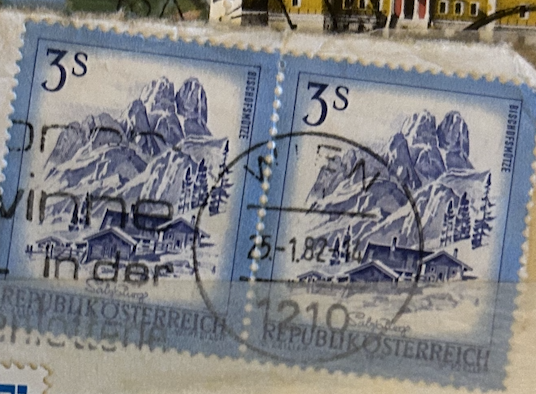
| SOURCE | TITLE| IMAGE MATCH | click to source page |
| eBay.de | Briefumschlag aus Österrech GRAZ befördert nach Bielefeld Mehrfachfrankie (4795) | eBay.de | 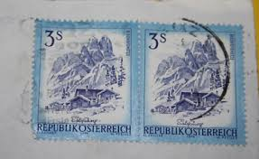 |
| HipStamp | Austria #963 Used - 3s Bishofsmutze Salzburg (1978) | Europe - Austria, General Issue Stamp / HipStamp | 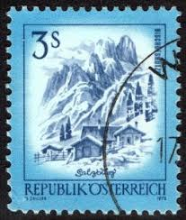 |
| eBay | Austria Alps Mountains stamp 1974 | eBay | 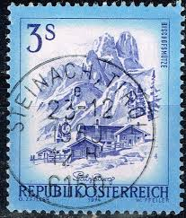 |
| eBay | 1974 Republik Osterreich 3 Schilling Austria/Austrian Postage Stamp | eBay |  |
| eBay | Österreichische Briefmarken (1970-1979) mit Briefstück online kaufen | eBay |  |
| eBay UK | AUSTRIA stamp 1974 3s Scott#963 Salzburg R60 used | eBay UK | 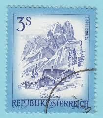 |
| vividagallery.com | Bischofsmutze Dachstein Austrian Alps Mountain Peak Salzburg Alp Canvas Print by Vivida Gallery - Vivida Gallery |  |
| HipStamp | Austria 1974 Sc#963, SG#1680 3s Blue Mountain Scene USED-FINE-NH. | Europe - Austria, General Issue Stamp / HipStamp | 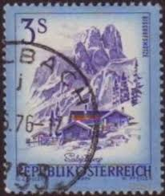 |
| BalkanAuction | Postage stamps | Philately | Collectibles | BalkanAuction | 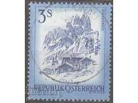 |
| Stamp Community Forum | Austrian Stamp Engravers - Page 3 - Stamp Community Forum | 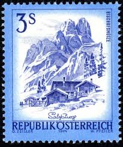 |
| HipStamp | Stamps Are Friends / HipStamp | 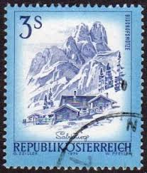 |
| Bob Shop | Austria - Austria - 1974 Austrian Landscapes 3S used was listed for 1.20 on 14 Jul at 18:16 by petersbooks in South Africa (ID:647830678) |  |
| Rakuten | Timbre autriche : Republik Österreich, Bischofsmütze (l'évêque) im Dachsteinmassiv, Salzburg, 3 s | Rakuten | 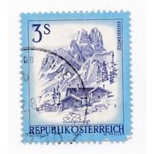 |
| Dreamstime.com | Salzburg Postmark editorial photography. Image of stamp - 385384982 |  |
| ebid.net | USA 1970 SG1390 usa85 Dwight D. Eisenhower 8c Used Stamp on eBid United Kingdom | 199515084 | 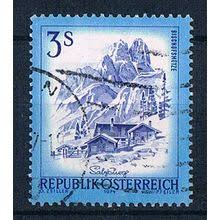 |
| ebid.net | SEYCHELLES 1912 KG5 2c MINT MH SG21 21 SG on eBid Denmark | 225060270 |  |
| Osta.ee | Austria 1974, linnad: Salzburg, arhitektuur, templiga (194885951) - Osta.ee |  |
| BalkanAuction | Συλλεκτικά | BalkanAuction |  |
| Dorotheum | Österr. - Mi Nr. 1442F (3S Schönes Österr. OHNE HELLKOBALTEM RASTERTIEFDRUCK -RAHMEN), - Briefmarken und Ansichtskarten 25.08.2025 - Erzielter Preis: EUR 150 - Dorotheum |  |
| iStock | Austria Stamps Bishops Cap Scenery Salzburg From The Series Sights In Austria Illustration Stock Photo - Download Image Now - iStock |  |
| allnumis.com | 3 Schilling 1974 - Bischofsmütze im Dachsteinmassiv, Salzburg, Landscape - Austria - Stamp - 46856 | 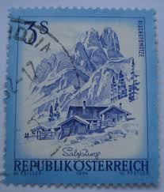 |
| Mystic Stamp Company | 963//67 - 1973-78 Austria - Mystic Stamp Company |  |
| iStock | Austria Postage Stamp Stock Photo - Download Image Now - 1974, Austria, No People - iStock | 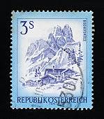 |
| www.briefmarken-forum.com | Schönes Österreich - Seite 8 | 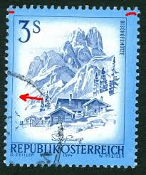 |
| Osta.ee | Leiunurk 1-231 Varia (247637009) - Osta.ee |  |
| sellosmundo.com | Sellos de Austria de Germán Castro Besnier. Coleccionista de sellos del Mundo. | 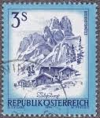 |
| Rakuten | Osterreich Timbres pas cher - Meilleures offres sur le neuf et l'occasion | 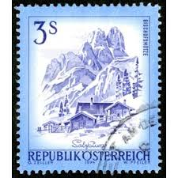 |
| Osta | Austria. Arhidektuur 1974 a. (195675283) - Osta.ee | 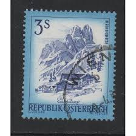 |
| Todocolección | osterreich austria 20 heller daily año 1920... - Buy Antique stamps of Austria on todocoleccion |  |
| eBay | FREE SHIP Austria Definitive Beautiful 1978 House Mountain Salzburg (stamp) MNH | eBay Australia |  |
| Violity | Austria 1974 3S Bischofmutze, Republik Osterrich (1) (122584053) - купить на Violity |  |
| Osta.ee | 29-22 varia austria (247487844) - Osta.ee |  |
| さくらのレンタルサーバ | 植村直己 |  |
| Shutterstock | 421 Salzburg Stamps Royalty-Free Images, Stock Photos & Pictures | Shutterstock |  |
| Violity | Austria 1974 3S Bischofmutze, Republik Osterrich (11) (122584082) - купити Violity | 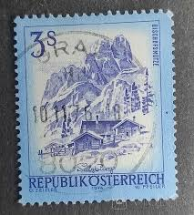 |
| Shutterstock | 4+ Hundred Salzburg Stamps Royalty-Free Images, Stock Photos & Pictures | Shutterstock |  |
| Violity | Austria 1974 3S Bischofmutze, Republik Osterrich (9) (122584074) - купити Violity |  |
| kitantik | Efemera - Avusturya Pulu - Österreich Austria Stamp - Postadan Geçmiş Pul Filateli - Dachstein Dağları ve Dağ Klübesi Temalı Pul, 3 PARA - YABANCI PULLAR - NOSTALJİK DOĞUM GÜNÜ HEDİYESİ - kitantik - kitaLog | 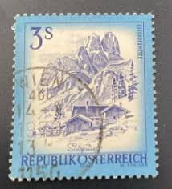 |
| ArtStation | ArtStation - Treehouse made for daughter out of recycled materials. 3 views. |  |
| Shutterstock | Collections by Kiev.Victor | Shutterstock Contributor |  |
| تمبرستان | 1 عدد تمبر یادبود راینر ماریا ریلکه - شاعر و رمان نویس - اتریش 1976 | 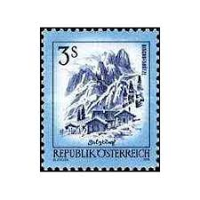 |
| philaforum.com | Ferienland-Satz - Österreich ab 1945 - PHILAFORUM.COM Briefmarkenforum |  |
| 11 个Österreich 点子 | 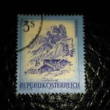 | |
| Galéria Savaria | Gyűjtemény - Bélyeg - Eladott termékek | Galéria Savaria online piactér - Vásároljon vagy hirdessen megbízható, színvonalas felületen! | 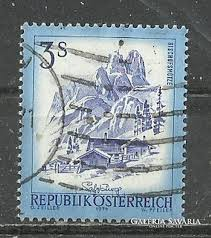 |
| Violity | Austria 1974 3S Bischofmutze, Republik Osterrich (7) (122584069) - купити Violity | 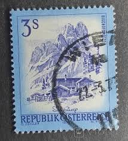 |
| Vendora.gr | Αυστρία γραμματόσημο μεταχειρισμένο - € 1,00 - Vendora.gr | 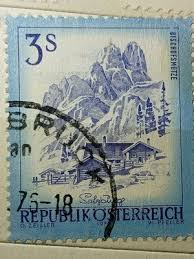 |
| Todocolección | so) austria, airplane, luposta vienna 1961 - Buy Antique stamps of Austria on todocoleccion | 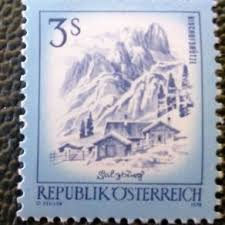 |
| Shutterstock | 11 Bishofsmutze Royalty-Free Images, Stock Photos & Pictures | Shutterstock |  |
| Free | La zone des timbres : comment trouver le pays d'un timbre |  |
| Dreamstime.com | Beautiful 1974 Chevrolet Caprice Classic Convertible Editorial Stock Image - Image of automotive, grove: 180311684 | 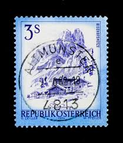 |
| Todocolección | austria, 1950, sello de tasa yvert 230 - Buy Antique stamps of Austria on todocoleccion | 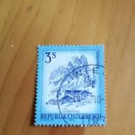 |
| Shutterstock | AUSTRIA - CIRCA 1974: sello impreso Foto de stock 70133149 | Shutterstock | 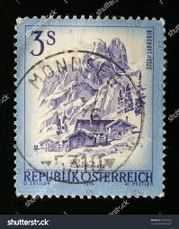 |
| Shutterstock | Ankara Türkiye 06152023 Austria Postage Stamp Stock Photo 2317819621 | Shutterstock | 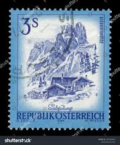 |
| eBay | Austria 1974 3s BISCHOFSMUTZE, SALZBURG SC 963 MNH | eBay | 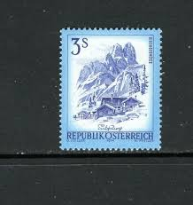 |
| Shutterstock | Austria Circa 1974 Stamp Printed By Stock Photo 70133149 | Shutterstock | 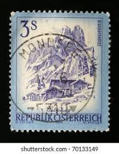 |
| esam.ir | اتریش 1974 Landscapes of Austria | 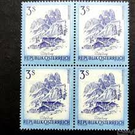 |
| Alamy | Old stamp from Austria. Cancelled in Innsbruck in 1948 Stock Photo - Alamy | 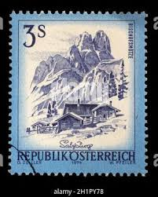 |
| iStock | Vintage Rail Station On An Old Swiss Postage Stamp Stock Photo - Download Image Now - Horizontal, No People, Old-fashioned - iStock |  |
| Мешок | монета европа 3 крейцера 1680 Зальцбург Австрия» на Мешке | 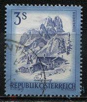 |